Text and images Copyright (C) 2002 Eric R. Jeschke and may not be used without permission of the author.
 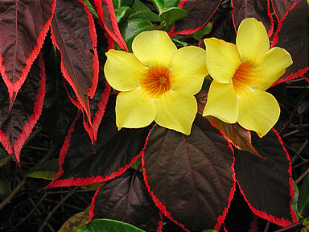
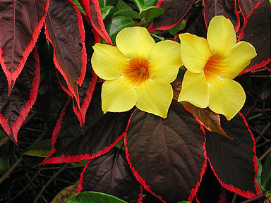
In this tutorial I'll show you how to do create a contrast mask for your image in The GIMP. A contrast mask allows you to reduce overall contrast, simultaneously bringing out more detail in highlights and shadows. This may be necessary to obtain a decent print, because prints on paper do not have as much dynamic range as a monitor; if you don't control the contrast, detail in the highlights may blow out and detail in the shadows can block up and become muddy or even black. You can of course modify your image directly in The GIMP to decrease contrast, but the advantage of the contrast mask technique is that it allows you much more precise control, and gives better results.
The basic technique is to create a layer above the image that contains a B&W negative of the image. The images are combined in overlay mode: dark parts with light,
light parts with dark. All the while your original image remains blissfully unchanged on its layer.
Giving credit where credit is due: I did not come up with this method. I adapted it for The GIMP from a Photoshop tutorial on
the luminous-landscape.com web site (great photography web site BTW; I recommend it).
The contrast mask technique does some similar things for the exposure as the digital split ND filter and the blended exposures techniques.
If you feel your image has exposure problems you might want to consider those techniques as well. Each one has different strengths.
Occasionally this technique gives unacceptable color shifts in certain images. Sometimes it is just the ticket.
Experiment to see if it can work for your particular image.
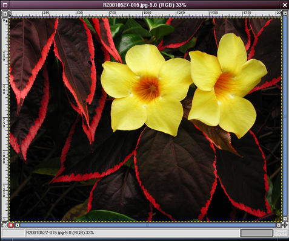
Here is the original example image, loaded into The GIMP.
The red leaves are a little too dark to make out the detail; if printed, the result would be pretty dark and muddy.
At the same time, the yellow flowers have a couple of specular highlights that would probably blow out the detail if printed.
We want to brighten the dark areas a little and darken the light areas a little. In other words, reduce contrast.
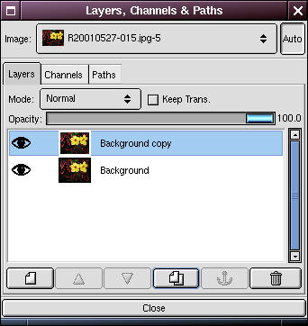
Open the Layers dialog. Right-click on the Background layer and select Duplicate (there is also a button for this in the bottom button bar of the Layers dialog.

Now double-click on the duplicate layer and rename the new layer "Contrast Mask". (This step is not strictly necessary, but it is helpful to prevent confusion about what is on each layer, especially if you add some additional layers for other editing purposes).

Select the Contrast Mask layer. Go to the image window and right-click, selecting <Image>Image->Colors->Desaturate. The image should look B&W.
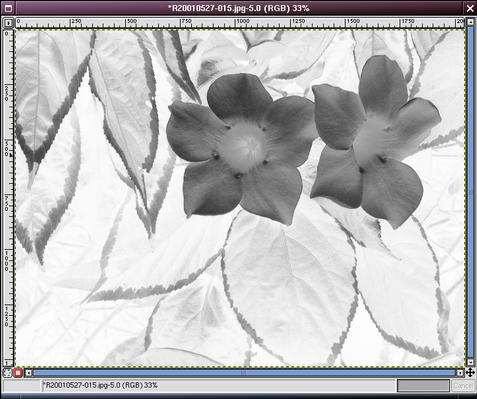
Right-click and select <Image>Image->Colors->Invert. You now have a B&W negative image of your original. We're going to combine this with the original (light with dark, dark with light) to reduce the overall contrast.

Go back to the Layers dialog and in the "Mode" drop-down box, select "Overlay". The result may look better in terms of contrast, but degraded in terms of overall sharpness.
Don't worry, we're not done yet.
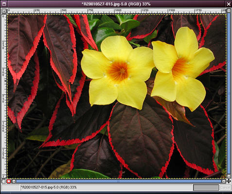
Go back to the image window and right click, selecting <Image>Filters->Blur->Gaussian Blur.
You will need to experiment to find the best value,
but typically a value between 10 and 30 will do nicely. After blurring the contrast mask the overall image should now look much sharper.
Click on the "eye" next to the Contrast Mask layer in the Layers dialog to rapidly compare the image with and without the mask.
Similarly, turn off the Background layer if you want to view the mask to do further work on it.
The image at top left is the original, the top right is with the contrast mask.
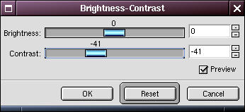

It is informative to see how this technique compares to the conventional technique of using the contrast dialog to adjust contrast. I've tried to adjust the contrast to have the leaves appear about the same. I think the image with the contrast mask has a lot more pop! This one looks kind of flat by comparison.
 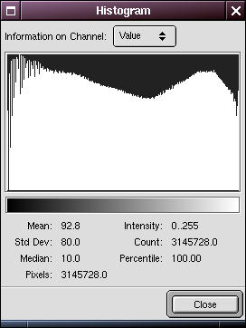
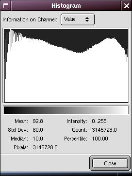

To see why this is so, compare the histograms of the images. The top one is for the original image, the middle is for the image with the contrast mask,
and the bottom one is for the original image with the conventional contrast adjustment.
Note how the typical contrast adjustment has lost a lot of values at both ends, but the mask technique basically preserved the entire scale.

You'll have to flatten the image if you are saving it to a typical image format like TIFF or JPEG (but not if you are saving to the GIMP's native XCF format). To do that, right-click on the image and select <Image>Layers->Flatten Image.
Now that your contrast mask is created, it's time to fine tune it. Here are some things you can do:
- Use the "Opacity" slider in the Layers dialog to decrease the effect of the contrast mask overall.
- Apply Levels or Curves to the contrast mask to open up the shadows or reduce the highlights further.
- Apply the dodge and burn tools to the contrast mask.
- Apply a layer mask to the contrast mask and use it to select only parts of the contrast mask; e.g. if you only want the contrast mask to apply to certain areas of the image (see my example of this below).
- See this article for some informative tests on the effects of the Gaussian Blur step on the contrast mask.
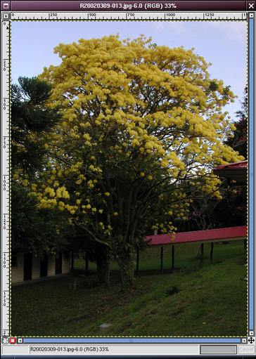

With a contrast mask as described above. Notice how the sky has recovered some blue, and the detail visible under the tree!


Here's an example of how this technique overlaps with the digital split ND filter approach. Which do you prefer?
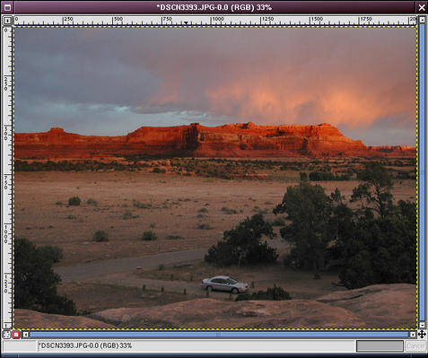 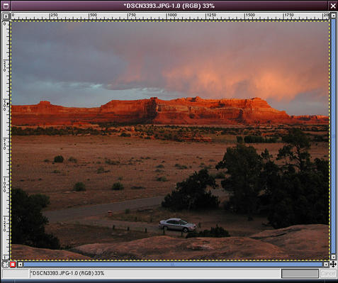
With a digital split ND filter. (left image)
With a contrast mask as described above, plus a layer mask with a gradient fill, so the contrast mask is mostly applied to the area below the cliffs. (right image)
Note particularly the change in the color of the cliffs and the light part of the sky just above the cliffs, in the image using the full contrast mask (upper right). This shows how a contrast mask affects all parts of the image, unless you selectively disable part of the mask, as I did in the lower right. Note also that with the split nd filter (lower left) I was able to brighten the foreground more; I could apply a general levels tweak to the contrast mask to achieve the same thing, but it seems like more work. This illustrates a general point for me: the digital split ND filter technique is the easier approach when you're already satisfied with half of the image, whereas the contrast mask is a better starting point if the overall image needs contrast reduction on both the dark and light sides.
The original tutorial (possibly with updated information) may be found here.